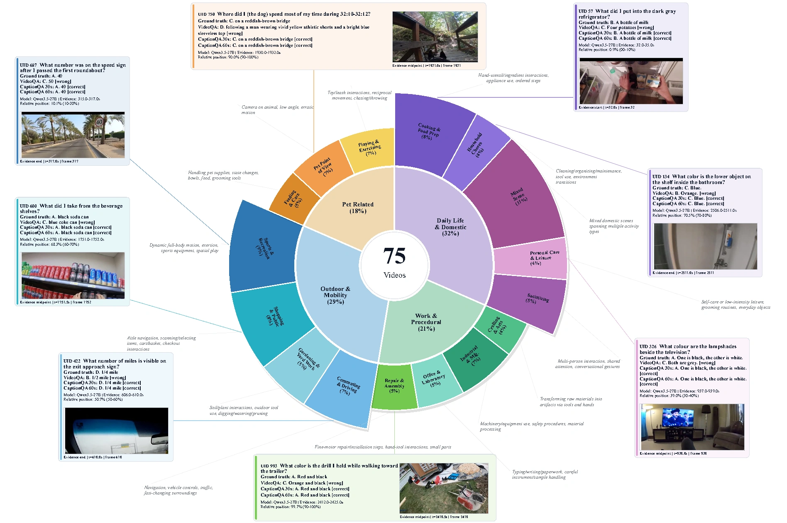
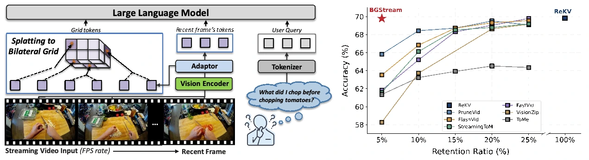
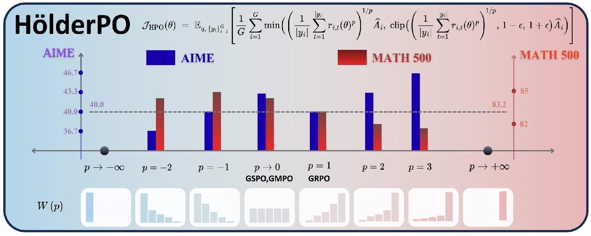
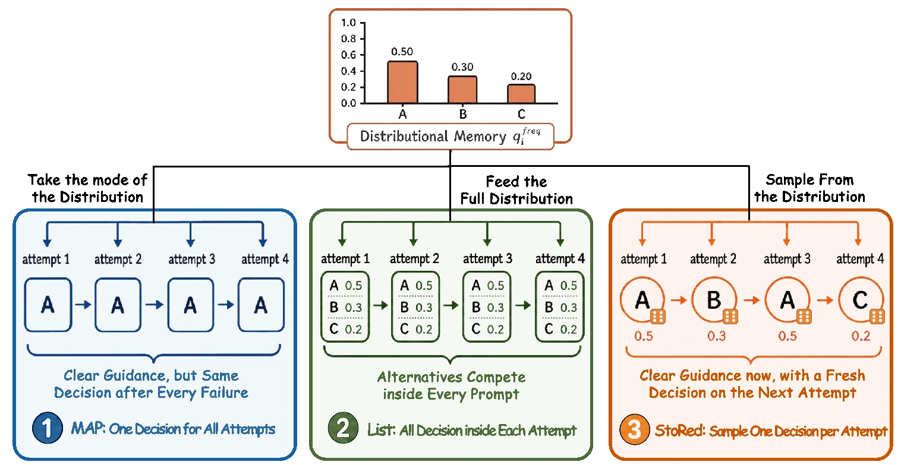
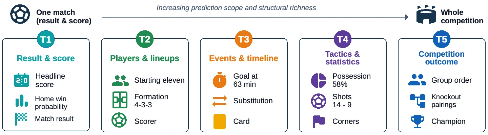

View figureCapMem: A Benchmark for Caption-Based Episodic Memory in Egocentric Video
EMNLP 2026
Turning egocentric video into caption-based episodic memory for long-horizon recall and reasoning.
* Equal contribution
Research
Artificial intelligence & arithmetic geometry

View figureEMNLP 2026
Turning egocentric video into caption-based episodic memory for long-horizon recall and reasoning.
* Equal contribution

View figureUnder review at ICLR 2027
A training-free bilateral-grid method that compresses streaming visual tokens while preserving their semantic structure.

View figureUnder review at ICLR 2027
A unified policy optimisation framework that adjusts token-level aggregation through the Hölder mean.
* Equal contribution

View figureResearch manuscript
Sampling one coherent memory-guided instruction per attempt helps frozen agents make better use of retries.
* Equal contribution

View figureUnder review at ICLR 2027
Evaluating evidence-grounded forecasting across match results, players, events, tactics, and entire competitions.
Accepted by Compositio Mathematica
Structure theorems for torsion modules over non-Noetherian rings and applications to Weil–étale cohomology.
Journal of Algebra 661 (2025), 757–777
Acta Arithmetica 189 (2019), no. 2, 191–208